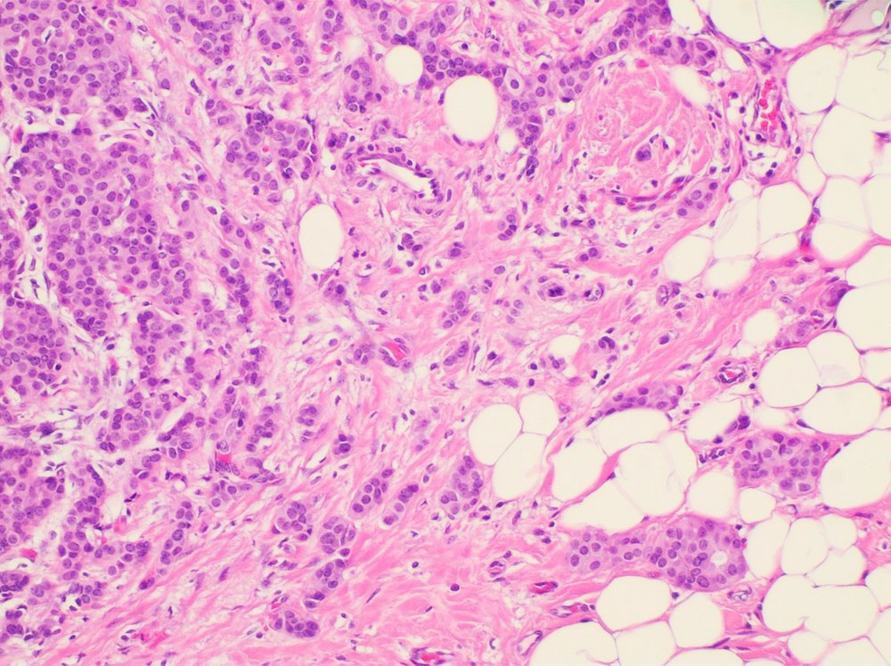

Computational pathology
Wenchuan Zhang
张文川I’m a PhD candidate at West China Hospital, Sichuan University, advised by Prof. Hong Bu and Prof. Yuhao Yi. I trained in clinical pathology at Shengjing Hospital and am a licensed physician in China.
I study how AI models read tissue slides and what a breast biopsy can tell us about a patient’s response to treatment.
Research
Reasoning with pathology images
We train vision-language models to retrieve evidence from pathology textbooks and test whether their answers depend on what they can see in the slide.
Breast cancer treatment response
I combine biopsy slides, imaging, and molecular and clinical data to predict pathological complete response after neoadjuvant therapy.


Publications
Google Scholar14 journal articles 2 conference papers 7 preprints
-
AAAI2026
Patho-R1: A Multimodal Reinforcement Learning-Based Pathology Expert Reasoner
Training a model to reason about pathology images using paired figures and text, expert reasoning examples, and reinforcement learning.
-
AAAI2026
Patho-AgenticRAG: Towards Multimodal Agentic Retrieval-Augmented Generation for Pathology VLMs via Reinforcement Learning
A model searches illustrated pathology textbooks over multiple steps to find visual and textual evidence for its answers.
-
arXiv preprint2026
Do Pathology Vision-Language Models Truly See Pathology?
PathBind tests whether models can connect the answer to the relevant tissue region, including when the question alone offers clues.
-
npj Digital Medicine2026
Deep learning prediction of pathological complete response in breast cancer using Mamba architecture
We evaluated a whole-slide model for predicting response from pretreatment biopsies in 1,646 patients across five hospitals.
-
The Journal of Pathology2026
-
arXiv preprint2026
-
arXiv preprint2026
-
Laboratory Investigation2026
-
arXiv preprint2026
-
arXiv preprint2026
-
arXiv preprint2026
-
Breast Cancer Research2025 online · 2026 issue
Attention-based multimodal fusion transformer for predicting the efficacy of neoadjuvant therapy in breast cancer: a cross-institutional retrospective study
MuFi combines biopsy slides with breast MRI to predict treatment response across two institutions.
-
Breast Cancer Research2025
-
npj Precision Oncology2025
-
The Breast2025
-
arXiv preprint2025
-
Scientific Reports2024
-
Frontiers in Microbiology2023
-
Heliyon2023
-
BMJ Open Diabetes Research & Care2023
-
Frontiers in Oncology2022
-
Frontiers in Cellular and Infection Microbiology2022
-
Experimental and Therapeutic Medicine2022
Background
Education & training
- 2023 – 2027 (expected)
- PhD in Pathology and PathophysiologyWest China Hospital, Sichuan University
- 2020 – 2023
- MS and residency in Clinical PathologyShengjing Hospital of China Medical University
Experience & honors
- Mar – Sep 2026
- Medical AI research internshipLarge language model development at Xiaohe Healthcare, ByteDance
- Mar 2026
- Oral presentationUnited States and Canadian Academy of Pathology Annual Meeting
- Dec 2025
- Outstanding Graduate StudentSichuan University
- Mar 2021
- First-Class Graduate Academic ScholarshipChina Medical University